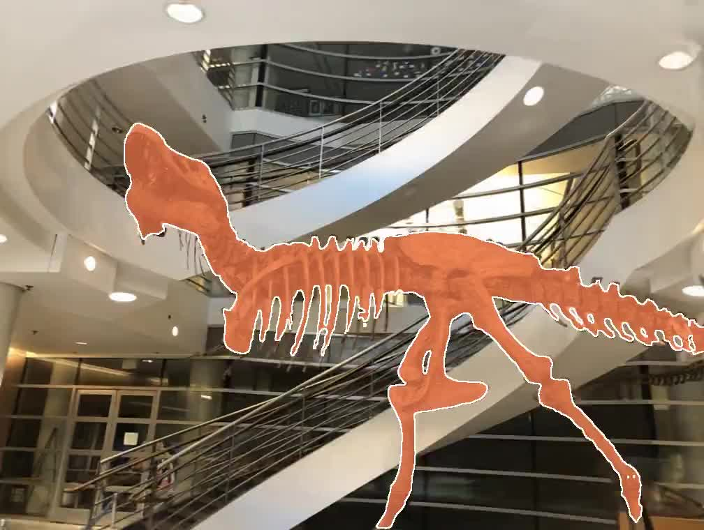
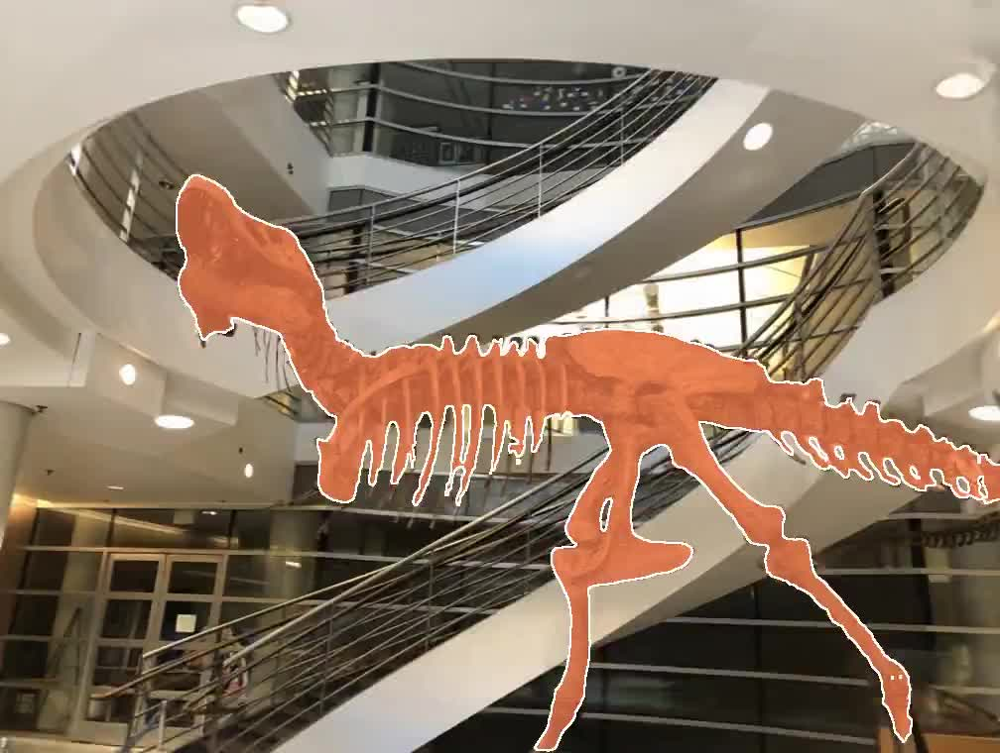

Segment Anything
With the help of Segment Anything Model , we can easily extract objects from NeRF generation.



Neural Radiance Fields (NeRF) offer a promising approach for scene representation in 3D reconstruction and photorealistic rendering from novel viewpoints. Recent advancements in NeRF-based stylization have shown impressive results in transferring styles to textures, colors, and more within 3D scenes. However, these previous works lack a focus on specific components within the scenes, resulting in limited control. To address this limitation, we propose an approach that combines Track-Anything and existing models to construct a comprehensive framework. This framework enables the transfer of arbitrary styles onto target objects while maintaining consistency in both geometry and appearance across other components of the scene.
With the help of Segment Anything Model , we can easily extract objects from NeRF generation.
Build upon Segment Anything Model , the Track Anything enables object stylization in videos for NeRF.
We generate object level stylization upon global stylization and segmentation.
Style Image
Style Image
Style Image

Style Image
Style Image
First Style (for fortress)
Second Style (for table)
Mask for First Style
Mask for Second Style
With the same pipeline, we can apply several styles to different objects in the same scene.
From left to right: No Style; Style 1 ; Style 2 ; Style 1 + 2
Our model is built upon ARF: Artistic Radiance Fields.
See also: Segment Anything Model, Track Anything Model.